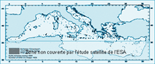

Mer D'Huile
L’irresponsabilité des uns rencontre le laxisme des autres ! Bilan, le littoral et les océans paient le prix fort. Exemple alarmant, la mer Méditerranée est gravement victime des rejets illicites et des déballastages illégaux. Pour couronner le tout, quelques marées noires viennent parachever les dégâts quotidiens..Suite au récent mais sinistrement banal incident « Prestige », il est temps de faire le point sur les pollutions marines d’origine navale et de se mobiliser pour obtenir enfin des solutions valables !
Le Constat : Marees noires et « degazages » : une menace a court terme !
Lorsqu’on parle de pollution marine « volontaire », on distingue deux catégories qui sont propres au type de bateau responsable :
- La pollution des pétroliers SLOPS : La pollution spécifique des pétroliers est due à la pratique du déballastage.Remplir les cuves d’eau de mer permet à ces transporteurs de garder leur stabilité une fois la cargaison livrée. Lorsqu’un pétrolier achemine un produit de nature :différente à son chargement précédent, il doit être nettoyé. Un déballastage sauvage permet de purger ses cuves à moindre frais !
- La pollution de tous les navires civils (sludge) :
Tankers, ferries, bateaux de pêche… ces navires utilisent comme énergie de propulsion un fuel brut de piètre qualité. Pour pouvoir être utilisé comme carburant, ce fuel est centrifugé.
Les résidus non-combustibles restant après cette opération sont la plupart du temps stockés en fond de cale avant de finir par dessus bord lors d’un nettoyage... Particulièrement abondants sur un navire, les huiles de vidange et les produits de graissage s’ajoutent à cette pollution.
Les chiffres clés du « dégazage » et du déballastage illicites en Méditerranée
| Flotte mondiale > Répartition des types de bateaux en activité |
Total : 1,67 millions t/an
Quantité de résidus huileux rejetés en Europe
(en tonne/an) |
|
Le rejet volontaire d’huile de vidange et de résidus de fuel (sludges) est facilement calculable : la consommation mondiale de fuel pour bateau est de 228 millions de tonnes chaque année.
Chaque tonne de fuel consommée génère 2% de « sludges ». Bilan : les navires civils génèrent 4,56 millions de tonnes de sludges pour le monde entier, soit 1,37 millions de tonnes pour la Méditerranée (30% de la flotte mondiale).
En Méditerranée, ce type de pollution représente chaque année 50 Erika ou 15 Prestige. On dénombre pas moins de 280 rejets illicites par jour d’une quantité moyenne de 10 tonnes…
L’impact des pollutions maritimes par hydrocarbures. Lors d’une catastrophe de type “Prestige” ou “Erika”, les nappes de pétrole brut ont un impact fort sur la nature :
> 29% non dégradées pénètrent dans les sédiments
>15% souillent les côtes (3 Erika/an)
22% sont bio-dégradées
16% se dissolvent dans l’eau
15% s’évaporent dans l’atmosphère
3% s’agglomèrent en haute mer
Pour les rejets de dégazages (résidus de fuel et d’huiles), l’évolution est moins connue.
Mais nous savons que les huiles de synthèse utilisées sont non dégradables par définition ! Elles ont par conséquent un impact dramatique sur le milieu naturel, particulièrement sur la faune marine : métaux lourds, agents toxiques et cancérigènes, comme la dioxine, viennent s’accumuler au fil de la chaîne alimentaire.
Le danger concerne aussi bien les espèces marines.
Prestige : un scénario désormais classique ? Le 19 novembre 2002, le Prestige – un pétrolier libérien de 77 000 tonnes construit en 1976 et battant pavillon des Bahamas s’abîme au large des côtes de Galice (Espagne). Le navire se brisera en deux avant de sombrer par plus de 3500 m de fond, laissant 24 000 tonnes de fuel lourd derrière lui... Le 28 janvier 2003, l’épave du Prestige continue de fuir malgré le déploiement du plan anti-pollution franco-espagnol (Biscaye Plan). Zone classée Natura 2000, les côtes galiciennes comptabilisent désormais 3 marées noires et 1 marée chimique. Les conséquences directes pour les pays voisins comme le Portugal et la France semblent inévitables : boulettes et galettes de pétrole envahissent le littoral aquitain. Après l’Erika, la côte française Atlantique commence à désespérer. Aussi grave, certains bateaux profitent de l’outrage pour effectuer leurs « dégazages » de façon plus discrète. |
Déplorable et irresponsable…
Le Prestige accusait 24 années de navigation. L’affréteur du pétrolier – Crown Ressources, filiale abandonnée subitement par la compagnie russe Alfa – a choisi un autre navire pour remplacer le Prestige. Ce dernier, nommé Byzantio, a déjà été contrôlé 6 fois par les autorités maritimes de plusieurs pays européens dont la Grèce, la Belgique et l’Irlande. Malgré 8 transgressions majeures des règles internationales, ce pétrolier de 87 000 tonnes a pu quitter le port de Tallinn (Estonie) pour atteindre Rotterdam au cours du mois de décembre 2002.
Diagnostique : Mediterranee : une mer agressee
Estimation de la surface polluée annuelle :
entre 75 000 et 150 000 km²


|
L’ESA – Agence Spatiale Européenne – a rendu le résultat de son étude sur l’intensité de la pollution volontaire par dans le bassin méditerranéen par imagerie satellite. Le nord de la Méditerranée fut l’objet principal des observations des satellites ERS-1 et ERS-2 SAR. En Europe, seules la France et l’Italie sont pourvues d'un système aérien de surveillance et de détection des « dégazages » sauvages.
Europe / Méditerranée
Estimation moyenne* : 1,2 millions de tonnes par an
Monde
Estimation moyenne* : 4,1 millions de tonnes par an
* Estimation basée sur le calcul des quantités de rejets produits par les navires européens .(« Study on the feasability of a mandatory discharge system of ships waste to shore reception facilities in ports », UE, 1997) |
Comprendre : le « dégazage » et le déballastage : « Dégazage » est un terme détourné de son sens premier : il s’agit d’évacuer le gaz produit par les hydrocarbures afin de pouvoir pénétrer dans les cuves. Il désigne communément le fait de rejeter les déchets résultant du fonctionnement de tous les types de bateaux : les pétroliers comme les ferries, les porte-containers et même les chalutiers.
La pollution maritime en méditerranée : une origine bien identifiée :
Certains capitaines de navire préfèrent rejeter leurs déchets illégalement. Pourquoi cette habitude néfaste se pratique-t-elle quotidiennement aux quatre coins de la Méditerranée ?
Le coût : Le déchargement des déchets recouvre deux types d’interventions. Le traitement des “sludges” est l’opération la plus onéreuse (200€ par m3 déchargé). Le navire doit être immobilisé : ce type peut se faire en parallèle des autres activités de traitement réalisées à quai. Plus simple à décharger, le mètre cube de “slops” est pris en charge pour 0,15€.
Le manque d’installations :
Les installations de réception des déchets ne sont pas nombreuses en Méditerranée. Le WWF a contacté plus de 60 ports parmi lesquels seuls 11 disposent d’infrastructures adaptées au déchargement de « sludges » ou de « slops ». Le premier facteur de l’implantation de ces installations est leur « viabilité économique » : un petit port peu fréquenté aura beaucoup de mal à attirer ce genre de sociétés.
Une législation peu dissuasive :
Côté sanctions, le risque d’être pris en flagrant délit de « dégazage » est extrêmement faible : la majorité de l’espace maritime se situe en zone internationale, sans juridiction précise. Un statut de Zone de Protection Écologique pourrait donner un cadre législatif à ce « no man’s sea ». La question des moyens humains et matériels pour appliquer la loi se posera alors…
Des solutions
En théorie, les textes de lois couvrent un large éventail de problèmes liés à la pollution, mais ils ne sont pas appliqués !
Certaines lois présentent des zones d’ombres, notamment au niveau des contrôles. L’application de la directive européenne 2000/59 impose la mise en place d’installations de réception des déchets de rejet volontaire (huiles de vidanges et résidus de fuel) dans les zones portuaires.
Pour être plus efficace,on demande l’application des mesures suivantes :
- INTÉGRER les coûts de déchargement des déchets dans la taxe portuaire.
- Harmoniser le montant de la taxe portuaire au sein de l’UE.
- Intégrer à 100% les coûts du déchargement des déchets dans la taxe portuaire.
- Raccourcir la durée de l’opération pour ne pas prolonger le temps du navire à quai.
- RENFORCER la surveillance et les contrôles maritimes
- Renforcer le système de surveillance aérienne dont le dispositif Polmar.
- Faire intervenir la détection par satellite de l’Agence Spatiale Européenne
- Utiliser des boîtes noires et des balises Argos pour identifier le pollueur.
- Former des contrôleurs et des juges spécialistes afin de condamner les responsables impunis.
- RESPONSABILISER financièrement et pénalement
- Harmonisation des sanctions et application d’une amende fixe au montant élevé.
- En cas de récidives : immobilisation du navire et interdiction d’entrer dans le port.
- Les armateurs et les affréteurs d’un navire pollueur en seront responsables pénalement.
- CRÉER des Zones Écologiquement Protégées (ZPE).
- Étendre la zone de juridiction au-delà des 12 miles définissant les eaux territoriales.
- Dans la limite des 200 miles à partir des côtes, possibilité de rechercher, de vérifier et de condamner les rejets illégaux commis à l’intérieur de la ZPE.
- Un projet français de ZPE est à l’étude.